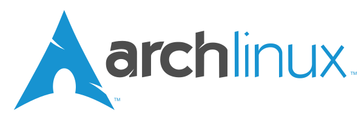

Una distribución Linux (a menudo abreviado como distro) es un sistema operativo basado en el núcleo Linux, que a menudo incluye muchos otros componentes como las utilidades del sistema GNU, un sistema de gestión de paquetes como APT o Pacman, paquetes de software como aplicaciones o códecs, y comúnmente un entorno de escritorio como GNOME o Cinnamon.
Existen distribuciones Linux con distintos propósitos, como distribuciones para casos de uso doméstico, empresariales, y para servidores. Muchas de ellas se especializan en una funcionalidad concreta, como, uso bajo de recursos, seguridad o compromiso con el software libre.
Fedora es una distribución Linux para propósitos generales, caracterizada por su estabilidad, pero también por estar a la vanguardia en la adopción de software libre y de código abierto. Es mantenida por una comunidad internacional de ingenieros, diseñadores y usuarios.
| Página oficial | enlace |
| Fecha de creación | 6 de noviembre de 2003 |
| Gestor de paquetes | RPM Package Manager |
| Interfaz gráfica predeterminada | GNOME |
Debian GNU/Linux (o simplemente Debian) es una distribución Linux de software libre, desarrollada por miles de voluntarios de todo el mundo, que colaboran a través de Internet. La dedicación del proyecto Debian al software libre, su base de voluntarios, su naturaleza no comercial y su modelo de desarrollo abierto la distingue de otras distribuciones del sistema operativo GNU.
| Página oficial | enlace |
| Fecha de creación | 16 de agosto de 1993 |
| Gestor de paquetes | dpkg |
| Interfaz gráfica predeterminada | GNOME |
Ubuntu es una distribución GNU/Linux basada en Debian GNU/Linux, que incluye principalmente software libre y de código abierto. Puede utilizarse en ordenadores y servidores. Está orientado al usuario promedio, con un fuerte enfoque en la facilidad de uso y en mejorar la experiencia del usuario.
| Página oficial | enlace |
| Fecha de creación | 20 de octubre de 2004 |
| Gestor de paquetes | dpkg |
| Interfaz gráfica predeterminada | Unity GNOME |
Linux Mint es una distribución Linux desarrollada por la comunidad de origen franco-irlandesa basada en Ubuntu y, a su vez, en Debian, que tiene por objetivo proveer «un sistema operativo moderno, elegante y cómodo que sea tanto poderoso como fácil de usar».
| Página oficial | enlace |
| Fecha de creación | 27 de agosto de 2006 |
| Gestor de paquetes | dpkg |
| Interfaz gráfica predeterminada | MATE, Cinnamon, Xfce |

Arch Linux es una distribución Linux de propósito general para arquitectura x86-64 orientada a «usuarios avanzados». Se compone en su mayor parte de software libre y de código abierto (FLOSS), desarrollada de forma independiente, se esfuerza por proporcionar las últimas versiones estables de la mayoría del software, siguiendo un modelo del tipo rolling release.
| Página oficial | enlace |
| Fecha de creación | 1 de junio de 2014 |
| Gestor de paquetes | Pacman |
| Interfaz gráfica predeterminada | Interfaz de línea de comandos |
CachyOS es una distribución Linux de liberación continua basada en Arch Linux que se centra en optimizaciones de rendimiento para hardware moderno x86-64, incluyendo cargas de trabajo de videojuegos. Recompila su núcleo y paquetes base con optimizaciones de compilador específicas para la arquitectura de la CPU, conservando al mismo tiempo el gestor de paquetes Pacman de Arch y la compatibilidad con el repositorio de usuarios de Arch.
| Página oficial | enlace |
| Fecha de creación | Entre 2020 y 2021 |
| Gestor de paquetes | Pacman |
| Interfaz gráfica predeterminada | KDE Plasma, GNOME, Hyperland |
SteamOS es una distribución derivada de Arch Linux, basada en Linux y desarrollada por Valve como sistema operativo principal de la línea de videoconsolas Steam Machines, Steam Deck y Steam Frame.
| Página oficial | enlace |
| Fecha de creación | 13 de diciembre de 2013 |
| Gestor de paquetes | dpkg o pkg |
| Interfaz gráfica predeterminada | Steam, KDE Plasma |
Kali Linux es una distribución Linux basada en Debian GNU/Linux diseñada principalmente para la auditoría y seguridad informática en general. Fue fundada y es mantenida por Offensive Security Ltd. Mati Aharoni y Devon Kearns, ambos pertenecientes al equipo de Offensive Security, desarrollaron la distribución a partir de la reescritura de BackTrack, que se podría denominar como la antecesora de Kali Linux.
| Página oficial | enlace |
| Fecha de creación | 13 de marzo de 2013 |
| Gestor de paquetes | dpkg |
| Interfaz gráfica predeterminada | Xfce, GNOME y KDE |